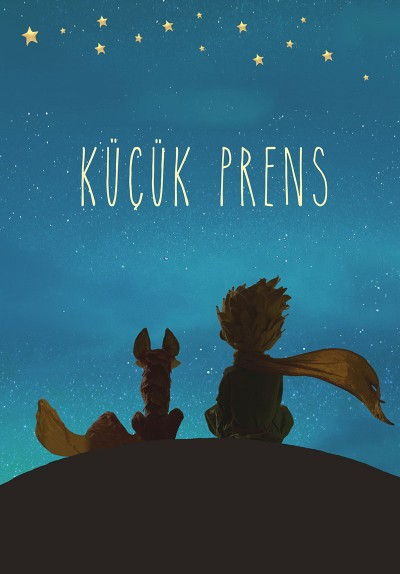

KÜÇÜK PRENS
Antoine de Saint-Exupéry
Küçük Prens (Fransızca özgün adı: Le Petit Prince), Fransız yazar ve pilot Antoine de Saint-Exupéry tarafından yazılan ve 1943'te yayımlanan masalsı bir kitaptır. Dünyanın en çok satan ve okunan kitaplarından biridir.[1] Eserde, bir çocuğun gözünden büyüklerin dünyası anlatılır. Sahra Çölü'ne düşen bir pilotun Küçük Prens ile karşılaşması ile başlayan kitap, yirmi yedi bölümden oluşur. Özellikle Küçük Prens'in yurdundan ayrılıp altı ayrı gezegene yaptığı gezileri anlatan bölümlerde bazı tipik yetişkin yaşam biçimlerinin eleştirisi yapılır. Bu geziler arasında kralın gezegeni, otorite tutkusunu; sanatçının gezegeni, kendini beğenmişliği ve sanatçının toplumla yitirmiş olduğu iletişimsizliği; sarhoşun gezegeni, umutsuzluk ve buna dayanan unutma isteğini; iş adamının yaşadığı gezegen, amaçsız sahip olma tutkusunu; fenercinin gezegeni anlamsız ve sorgulamaksızın yerine getirilen görev duygusunu; coğrafyacının yaşadığı gezegen ise bilimi kimin için yaptığını unutan bilim adamını ve bilim anlayışını sembolize eder.[2]
Yazar, New York'ta bir otel odasında kaleme aldığı bu hikâyenin çizimlerini de yapmıştır. Exupéry hem çizimleri hem de hikâyeleri bir çocuk kitabı gibi kurgulamış olsa da, bu kitap onun moderniteye ve II. Dünya Savaşı'nın etkilerinin sürmekte olduğu topluma eleştirisini ifade ettiği bir kitap olarak da değerlendirilir.[1] Yazarın ilhamını, kendi başından geçen olaylardan aldığı düşünülür. Bir pilot olan yazar Exupéry, 1935 yılında bir hız rekorunu denerken, Sahra Çölü’nün ortasına düşmüştü. Ayrıca karısı Consuelo’nun Küçük Prens gibi bitmek bilmeyen arzuları ve korunma arzusu olduğu, Küçük Prens’in gezegeni gibi volkanlarla dolu El Salvador’da yaşamıştı.[3] Hikâye ilk defa 6 Nisan 1943’te hem Fransızca hem İngilizce olarak yayımlandı. Günümüzde 210 farklı dil ve lehçeye çevrildi.[4] Türkçede 15 farklı dilde çevirisi bulunur. Sumru Ağıryürüyen, Fatih Erdoğan, Selim İleri, Azra Erhat, Nihal Yeğinobalı, Tomris Uyar ve Cemal Süreya eseri Türkçeye çevirenler arasındadır.[3] Yazar eserini, dostu Leon Werth’in çocukluğuna adamıştır.[5] Küçük Prens opera, tiyatro ve şarkılara da ilham vermiş, 12 kez sinemaya uyarlanmıştır. Küçük Prens ve yazarı Exupéry'nin resmi Fransa'da, 50 franklık banknotların üzerine basılmıştır. Banknotların üzerine gözle görülemeyecek küçüklükte yazılmış alıntılar işlenmiştir.[3] Küçük Prens telifli olarak Türkiye'de sadece Mavibulut Yayıncılık tarafından basılmıştır. 2015 yılının Ocak ayından itibaren telifinin serbest kalması ile birlikte 204 yayınevi tarafından basılmıştır. 2003 yılında Ay'ın "45 Eugenia" gök taşına "Küçük Prens" adı verilmiştir.
Konusu Yazarın uçağı birdenbire bozulur ve Sahra Çölü'ne iniş yapmak zorunda kalır. Çölde Küçük Prens ile karşılaşır. Küçük Prens yazara yaşadığı yeri, yaşadığı maceraları anlatmaya başlar. Anlattığına göre o, B-612 asteroidinde tek başına yaşayan bir prenstir. Gezegeninde çok sevdiği bir güle özenle bakar. Gülüne nasıl daha faydalı olabileceğinin yollarını araştırmak istediği için diğer gezegenleri gezmek zorunda kalmıştır. Kralın gezegeninde otorite tutkusunu, sanatçının gezegeninde kendini beğenmişliği, sarhoşun gezegeninde saplantıyı, iş adamının gezegeninde amaçsız sahip olma tutkusunu, fenercinin gezegeninde öğrenmeden ve değişmeden emir yerine getirmeyi, coğrafyacının gezegeninde ise elitizmi görür. Küçük Prens hepsinden mutsuz ayrılır. Gezdiği son gezegen ise Dünya'dır. Dünya, diğerlerinden farklı olarak büyük ve kalabalık bir gezegendir. İnsanların kendi değerlerinden daha çok, giysileriyle anlam ve değer kazandıkları bir yerdir.
KÜÇÜK PRENS - Genel Özet
Çocukluğundan itibaren büyüklerin yaşadıkları hayat şartları yüzünden, hayal ve yaratıcılığının kaybolduğunu gören kahramanımız. Tanıdığı herkese kendi çizmiş olduğu bir fil' i yutan boğa yılanı resmini gösterir. Ama kimse bu resmi anlayamaz. Yıllar geçer kahramanımız büyür ve Pilot olur. Gezintisi sırasında bir kaza geçirir ve bir yerde mahsur kalır. Yanında çok az yiyecek ve içeceği bulunmaktadır. Bir süre sonra Küçük Prensin sesiyle uyanır ondan koyun resmi çizmesini ister. Kahramanımız herkese çizdiği resmi çizer. Küçük Prens bunun fil' i yutan yılan olduğu söyler, koyun resimi istediğini tekrar eder. Bu sefer çizdiği resimi Prens çok beğenir ve ona kendi öyküsünü anlatmaya başlar. Yaşadığı, gezdiği yerleri anlatır. Son olarak gezdiği dünyada bir tilkiden aldığı sırrı açıklar ona bu sır; İnsanlara yüreğinin gözü ile bakması gerektiği. Zaman geçtikçe muhabbetlerinin sonuna yaklaşır kendi gezegenine gitmesi gerektiğini yapılacak işlerinin olduğunu söyleyerek ayrılır. Kahramanımızda uçağını tekrardan onarıp çalıştırıp evine döner.